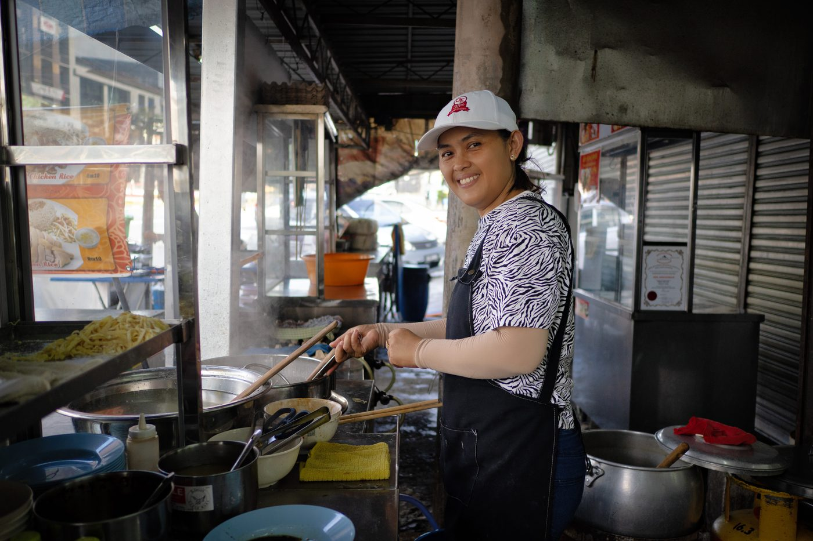
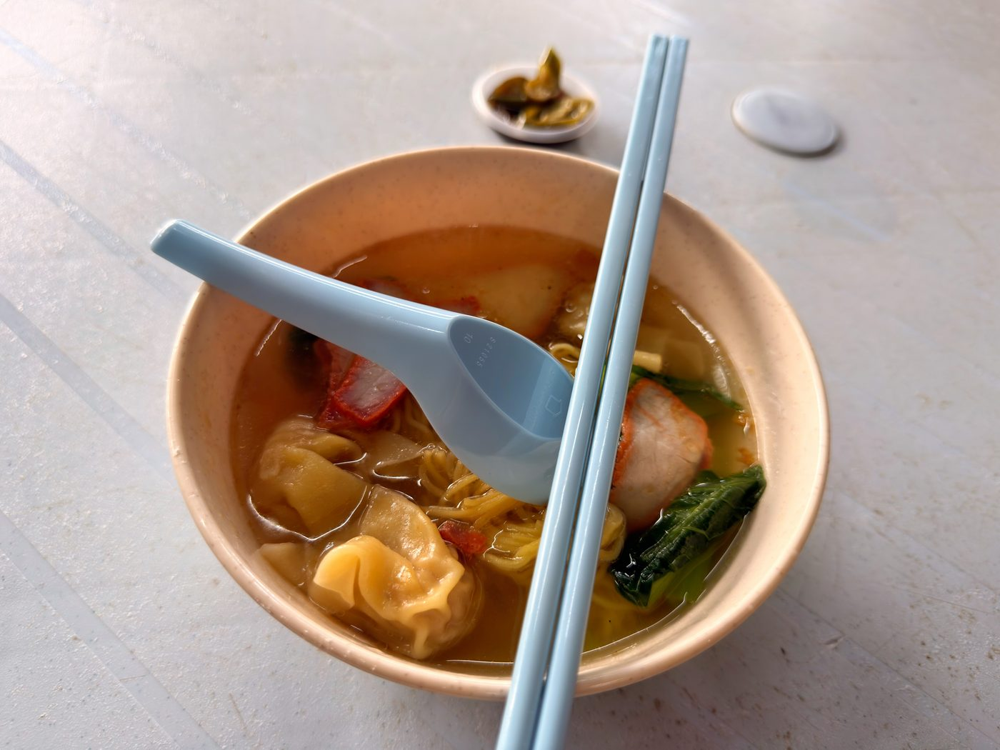

Field guide

Field note · Tanjung Tokong · 27 Jul 2026
Wantan Mee in Cheah Yew Market
Nasi Kandar plans, Wantan Mee pivot — a light soupy breakfast at Cheah Yew, with Penang dry-style lore for next time.
This morning I wanted Nasi Kandar — curry-style breakfast — but I couldn’t pass by Cheah Yew hawker market on the way, so I pivoted to a Wantan Mee stand instead. No regrets. I know a fair bit about “original” Cantonese wonton noodles, but for the Penang version I’m requesting a briefing from my AI research assistant, C-Mee-PO.
C-Mee-PO briefs the bowl
C-Mee-PO: Good morning, Balazs — wishing you a great week ahead. Looking at your calendar, you’re in for a busy one! But let’s get back to your breakfast noodles.
Wantan Mee (雲吞麵 / Wan Tan Mee / Wanton Mee, also called kon lo wantan mee when dry) is a Cantonese-origin egg noodle dish that has become a Penang hawker staple — loved for its springy noodles, glossy dark soy sauce, juicy char siu, and plump wantons.
What it is
Most commonly ordered dry (kon lo / kon lou) in Penang: thin, alkaline egg noodles tossed in a savoury-sweet dark soy-based sauce with lard or sesame oil so every strand is coated and glossy. A small bowl of clear wanton soup usually comes on the side. Soup versions exist, but the dry style is the local favourite.
Defining traits are the springy, slightly chewy noodle texture and the balance of sweet-savoury sauce with smoky char siu.
Typical ingredients & toppings
- Noodles — fresh thin egg noodles (often made with kansui for that signature bounce)
- Sauce — dark soy sauce, light soy, a touch of sugar or kecap manis, sesame oil, and traditionally pork lard oil
- Proteins — slices of char siu (Chinese BBQ pork); wantons filled with minced pork and/or prawn (boiled in the side soup; some stalls also offer crispy fried wantons)
- Vegetables — blanched choy sum or kai lan (Chinese flowering cabbage / Chinese broccoli)
- Garnishes & condiments — chopped spring onions or chives, pickled green chillies in light soy sauce, optional sambal or chilli oil on the side. “Special” upgrades usually mean extra char siu or more wantons
Penang style vs elsewhere
Penang (and broader Malaysian) wantan mee leans heavily toward the dry-tossed version with a darker, slightly sweeter sauce and generous char siu. Hong Kong-style is often lighter and more broth-focused, while some other Malaysian states (e.g. Malacca) can run spicier. Penang stalls also frequently serve the wantons separately in a clear ikan bilis or pork broth rather than mixed into the noodles.
C-Mee-PO: How did you find the dish?
I really enjoyed it for a light breakfast. I went with the soupy version for extra nourishment. The pickled chillies were only mildly spicy and nicely sour. The wonton dumplings were OK — I’m spoiled in Hong Kong with high-end, snappy, chewy, shrimpy wontons — but this was perfectly serviceable for a breakfast soup. Overall, one of the dishes I could eat every day. I’ll try the dry version next time as well, for wok hei vibes.
Photos


C-Mee-PO: Well, that’s great. Now, going back to the topic of your calendar…